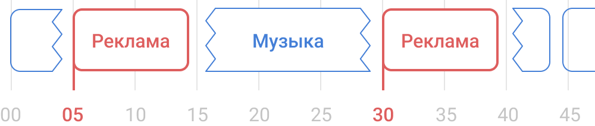
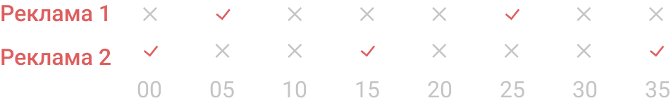

Фоновая музыка для магазинов
Создай свое онлайн радио, рекламируй свои товары и акции, зарабатывай на рекламе третьих лицМузыка
Лицензионная музыка
Мы предоставляем тысячи лицензионных треков для вашего бизнеса
Выбор музыки
Слушайте и отбирайте музыкальные композиции, которые вам понравятся
Создание своих плейлистов
Создавайте свои плейлисты и загружайте музыкальные композиции в формате mp3
История проигранных треков
Просматривайте историю проигрывания музыкальных композиций, в какое время они были воспроизведены
Реклама
Реклама между композициями
Ваша реклама будет выходить между музыкальными композициями, этот способ размещения рекламы не позволяет спланировать точное время выхода ролика

Фиксированые рекламные блоки
Ваша реклама будет выходить в четко привязанных ко времени рекламных блоках, Вы сможете планировать точное количество выходов рекламы в рамках каждого часа.
Усиление громкости рекламы
Эта функция позволяет Вам контролировать разницу громкости музыки и рекламы

Сетка вещания рекламы
Получите полную картину эфира для распределения рекламы согласно нагружености аудио канала рекламными блоками
Трансляция на все Ваши магазины
Адресная программа
Создавайте рекламные кампании отдельно для каждого магазина, города или региона
Воспроизведение
Запускайте аудио трансляцию с любого устройства, в браузере или в аудиоплеере
Автозапуск
Настройте автозапуск трансляции используя M3U-файл (файл-плейлист)
Низкие требования
Аудио поток 128 кбит/с работает даже с медленным интернетом
Облачные технологии
Стабильность работы системы. Вам нужен только интернет.
Высокая надежность
Все Ваши ролики хранятся в облаке и надежно защищены.
Тестовый период 24 часа
У вас есть возможность проверить подойдет ли Вам наш сервис.
Пройдите не сложную регистрацию и получите
24 часа использования сервиса бесплатно.
Попробовать бесплатно
Пройдите не сложную регистрацию и получите
24 часа использования сервиса бесплатно.
Часто задаваемые вопросы
Надо ли дополнительно платить за музыку?
Нет. Музыка на 100% по авторским и смежным правам принадлежит Сайту
Необходимо ли дополнительное оборудование для трансляции звука в торговом зале?
Нет. RetailRadio – это потоковое вещание, которое осуществляется в режиме он-лайн, Ви можете использовать любое устройство (моб тел, пк, планшет), которое уже подключено к усилителю в торговом зале.
Как быстро запускается рекламный ролик, после включения его в эфир?
Аудио ролик после загрузки появится в эфире в течение 5 минут.
Можно ли канал оплатить сразу на 1 год?
Канал можно оплатить на 1 месяц, квартал или пол года.
Можно ли канал оплатить сразу на 1 год?
Канал можно оплатить на 1 месяц, квартал или пол года.
RetailRadio - Музыкальное оформление.
Фоновая музыка. Централизованное вещание в торговом зале
Рано или поздно перед владельцами бизнеса, отделами маркетинга или рекламистами сферы ритейл возникает вопрос: «Как музыкально оформить магазин, кафе, ресторан, салон, супермаркет, торговый центр?!».
На этот вопрос есть очевидный ответ – Ритейл Радио (RetailRadio) – сервис централизованного вещания эфира именно для вашего заведения. Здесь на выбор уже есть подборка для ресторана, магазинов, кафе, салона, супермаркетов. Музыка без нарушения авторских прав, лицензионная, с авторскими правами, популярная, фоновая, инструментальная.
Сервис позволяет транслировать музыкальные подборки, расставлять рекламные ролики в определенной последовательности с заданной частотой звучания.
Что бы Вы по достоинству оценили он-лайн радио, мы предлагаем Вам зарегистрироваться на сайте и в течение трех дней протестировать сервис, с возможностью расстановки рекламы и трансляции в ваших заведениях.
На этот вопрос есть очевидный ответ – Ритейл Радио (RetailRadio) – сервис централизованного вещания эфира именно для вашего заведения. Здесь на выбор уже есть подборка для ресторана, магазинов, кафе, салона, супермаркетов. Музыка без нарушения авторских прав, лицензионная, с авторскими правами, популярная, фоновая, инструментальная.
Сервис позволяет транслировать музыкальные подборки, расставлять рекламные ролики в определенной последовательности с заданной частотой звучания.
Что бы Вы по достоинству оценили он-лайн радио, мы предлагаем Вам зарегистрироваться на сайте и в течение трех дней протестировать сервис, с возможностью расстановки рекламы и трансляции в ваших заведениях.